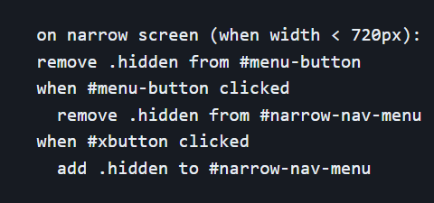
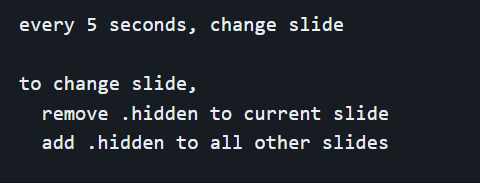
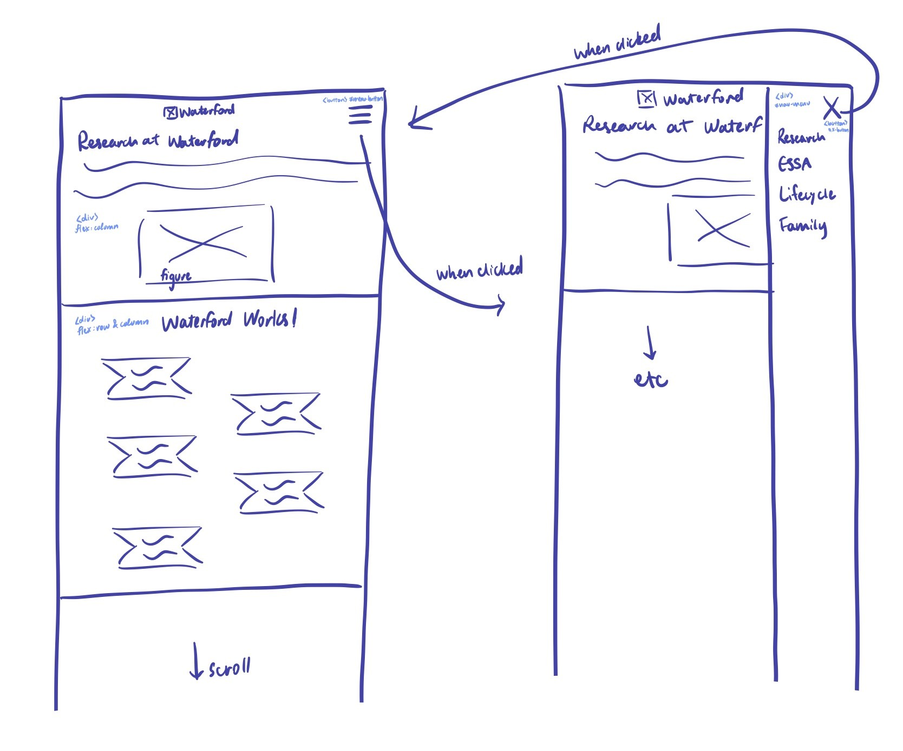
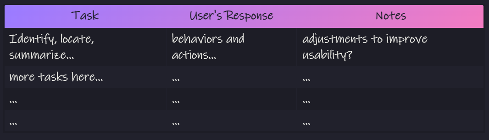

Research... 🤔
I conducted user interviews to answer the following question: How can Waterford present their research on a website effectively for users? or in other words, what are their goals?
The results revealed the following user goals:
- understand the emphasis on research and its effectiveness
- comprehend the research process
- easily find research evidence through large focus on visual data
Planning... ✍️
The Layout
The Theme
- matching color scheme with logo (consistency and professionalism)
- large graphics and study results (easy to follow and important)
- combination of soft edges/colors and bolded text/bright colors(engaging but also neat)
Prototyping... 📑
Interactivity Psuedocode ➡️
Below are some snippets of psuedocode implemented for the website
Hamburger Menu Psuedocode:
Automatic Carousel Psuedocode:
Website Mockup with Notes ➡️
This includes more detailed sketches providing html elements for easier implementation
Narrow Homepage Detailed Sketch
Website Draft
This is when I finally wrote the code with working functionality. I also altered some designs as I went to create a more cohesive looking project.
Here's an example of a change that I made:
version 1
version 2
Testing... 🧑💻
Usability Tests
I gave tasks for a user to complete and observed their behavior. Results revealed a few parts that needed to be adjusted. Notes of testing adhered to the following format:
Reflect and Revise
Usability testing revealed an issue with the quotations on the Family Engagement page.
Initially, on the Family Engagement page, there was a sidebar of quotations. However, it seemed too cluttered and was not very usable. Thus, I created a carousel of quotes to put at the bottom of the page.
With a few other fixes, I delivered the website to my client, took their feedback, revised once again, and resulted in the final version.